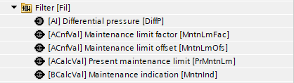
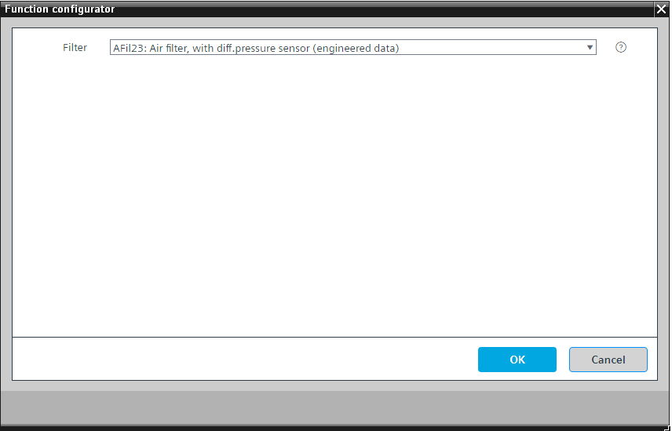

[AFil23] 空气过滤器，带压差传感器和维护指示
Program block, name / node subtype: [AFil23] Air filter, with differential pressure sensor and maintenance indication
Library hierarchy: Ventilation and air conditioning equipment
Family: Fil
项目树 | 图表 |
|---|---|
|
 |
|

Configurator


程序块存储在没有 I/Os. 的库中 使用auto-create and auto-connect函数创建 I/Os 和 /or 将它们连接到接口块，例如 R_A、CMD_B。或者，从包含库中预定义 I/Os 的文件夹中取出 I/Os，并从工厂中取出 /or，并将它们连接到接口块。
使用压差传感器监控空气过滤器。
过滤器元件的特性（给定空气流量下清洁过滤器元件的压差）在程序中设置（CHAR 类型的功能块）。该特性应在过滤器制造商的文档中提供。通常，整体包含多个过滤元件。它们的数量必须在程序中设置。将测得的送风或排风空气流量除以过滤器元件的数量，所得的每个过滤器元件的空气流量将用于功能块 CHAR。
将过滤器两端的压差与当前气流的清洁过滤器的压差进行比较（来自功能块 CHAR）。如果压差达到按以下方式计算的限值之一，则会生成维护指示：
- Differential pressure for clean filter for the current air flow plus an offset (e.g., + 100 Pa)
- Differential pressure for clean filter for the current air flow multiplied by a factor (e.g., 3)
姓名 | 描述 | 类型 | 报警/通知类 | 趋势/类型 |
|---|---|---|---|---|
DiffP | Differential pressure | AI：模拟输入 | No | 是的，2 |
MntnLmFac | Maintenance limit factor | ACnfVal: Analog configuration value | No | No |
MntnLmOfs | Maintenance limit offset | ACnfVal: Analog configuration value | No | No |
PrMntnLm | Present maintenance limit | ACalcVal: Analog calculated value | No | No |
MntnInd | Maintenance indication | BCalcVal: Binary calculated value | 是的，8 | No |
在编程编辑器中相应地设置过滤器元件的数量。